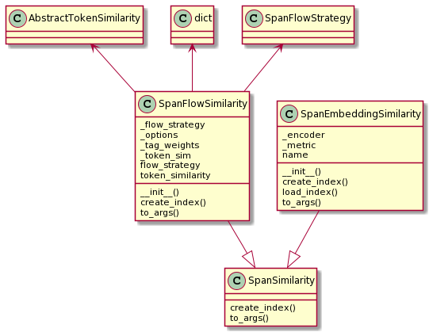
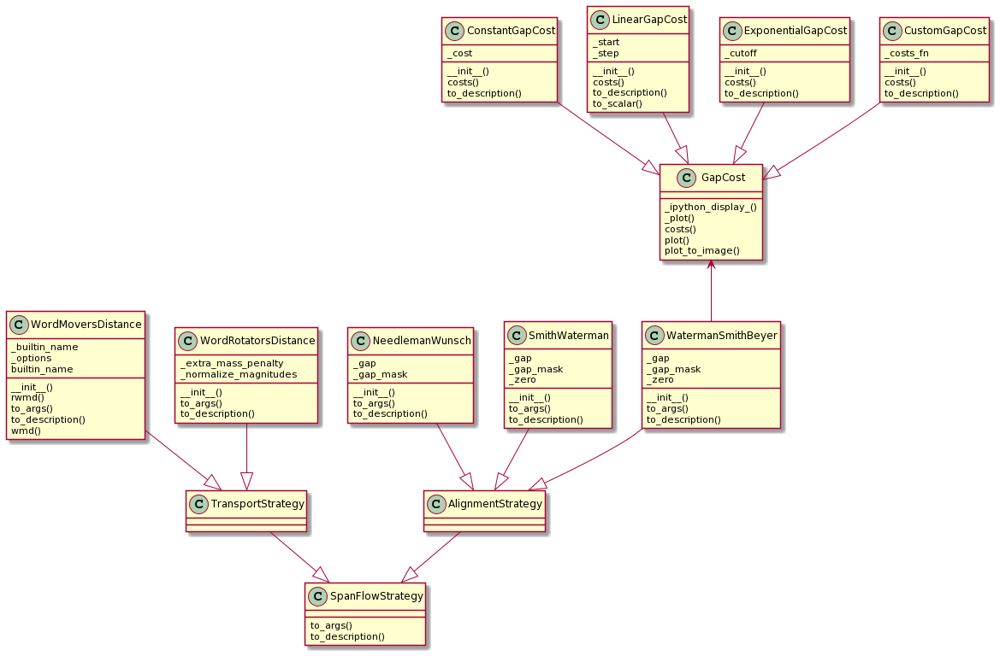

Span Similarity
SpanSimilarity
Classes that derive from SpanSimilarity model strategies to compare spans
of tokens, e.g. sentences. In contrast to comparing pairs of single tokens -
a concept that is called TokenSimilarity in the Vectorian API -
SpanSimilarity describes how to compute a similarity score between
two spans (i.e. sequences) of tokens, e.g. between to sentences.
There are two kind of SpanSimilarity strategies the Vectorian supports, and
they are handled in two separate classes:
SpanFlowSimilaritymodels span flows (e.g. alignments and WMD)SpanEmbeddingSimilaritymodels span embeddings

The term "span flows" encompasses anything that produces a flow or mapping
between pairs of spans on a token level. On the one hand this can mean classical
alignments - e.g. Needleman-Wunsch or Smith-Waterman. On the other hand,
"flows" also include network-based approaches such as Word Mover's Distance.
The exact kind of strategy is specified using a
SpanFlowStrategy in the SpanFlowSimilarity constructor.
The term "span embeddings" is a generalization of what is usually called
"document embeddings" or "sentence embeddings". With this strategy we
compute one embedding for a span of tokens. We do not specify an explicit
strategy for dealing with individual tokens. Instead we provide an encoder
that takes a span of tokens and outputs an embedding. To allow various kinds
of approaches (such as building span embeddings from token embeddings) the
actual encoder is wrapped inside other classes such as SpanEncoder and
PartitionEncoder (more on this later).
Here is an example of setting up a Waterman-Smith-Beyer alignment that uses cosine similarity over a pretrained GloVe embedding of dimension 50:
vectorian.metrics.SpanFlowSimilarity(
token_sim=vectorian.metrics(
vectorian.embeddings.PretrainedGloVe('6B', ndims=50),
vectorian.sim.vector.CosineSimilarity()
),
flow_strategy=vectorian.alignment.WatermanSmithBeyer(
gap=vectorian.alignment.ExponentialGapCost(cutoff=5),
zero=0.25))
SpanFlowStrategy
SpanFlowStrategy models a strategy to compute a network flow on the bipartite
graph that models a pair of token spans (with tokens as nodes and each part of
the graph modelling one span). Specific strategies to do this include classical
alignments (e.g. Needleman-Wunsch) and variants of the Word Mover's Distance.
The following diagram shows the current implementations for SpanFlowStrategy
available in the Vectorian.
